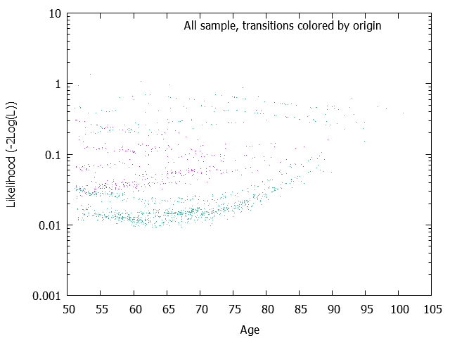
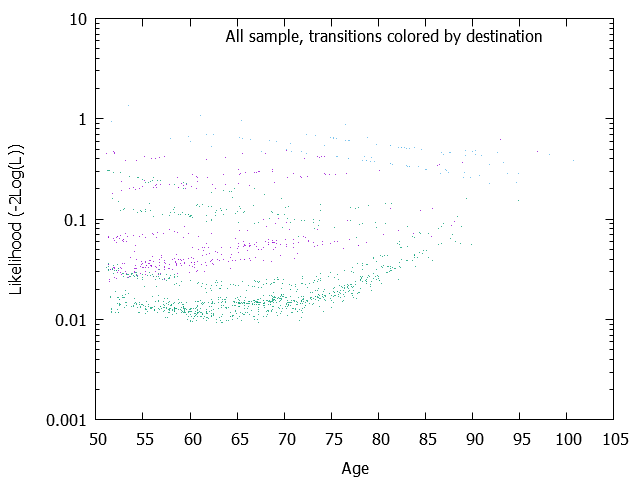
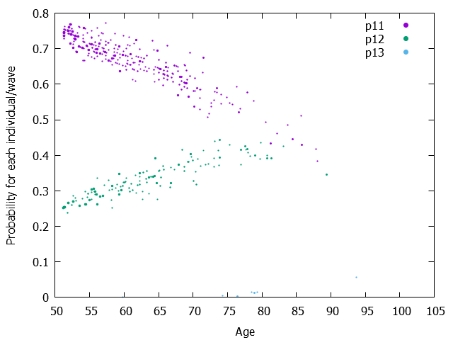
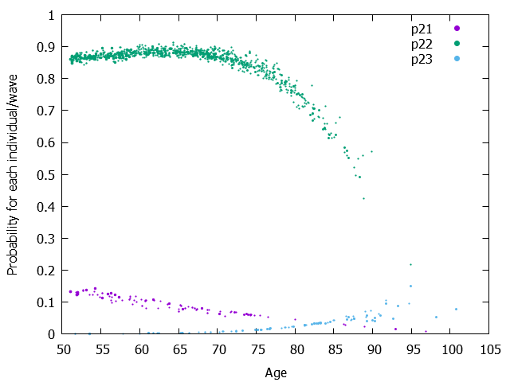

| Model= | 1 | + age |
|---|---|---|
| 12 | -4.4309285 | 0.0243157 |
| 13 | -16.5482139 | 0.1399827 |
| 21 | -2.2138581 | -0.0308481 |
| 23 | -14.2311167 | 0.1316629 |
The Wald test results are output only if the maximimzation of the Likelihood is performed (mle=1) Parameters, Wald tests and Wald-based confidence intervals W is simply the result of the division of the parameter by the square root of covariance of the parameter. And Wald-based confidence intervals plus and minus 1.96 * W It might be better to visualize the covariance matrix. See the page 'Matrix of variance-covariance of one-step probabilities and its graphs'.
| Model= | 1 | + age |
|---|---|---|
| 12 | -4.4309285 ( 0.6660355)W= -6.653[ -5.7363581; -3.1254988] | 0.0243157 ( 0.0102683)W= 2.368[ 0.0041899; 0.0444415] |
| 13 | -16.5482139 ( 5.2520327)W= -3.151[ -26.8421980; -6.2542297] | 0.1399827 ( 0.0671787)W= 2.084[ 0.0083125; 0.2716529] |
| 21 | -2.2138581 ( 0.8495881)W= -2.606[ -3.8790507; -0.5486654] | -0.0308481 ( 0.0130601)W= -2.362[ -0.0564459; -0.0052503] |
| 23 | -14.2311167 ( 0.9158178)W= -15.539[ -16.0261196; -12.4361138] | 0.1316629 ( 0.0112988)W= 11.653[ 0.1095173; 0.1538084] |